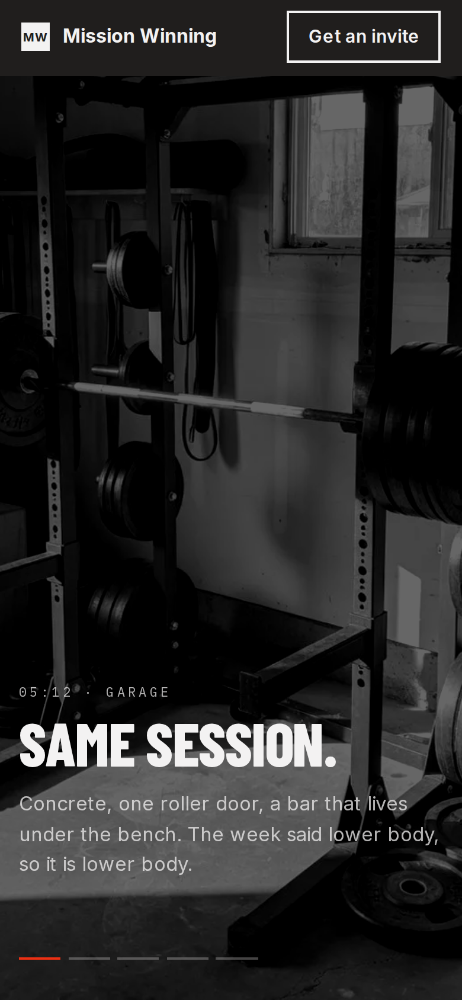
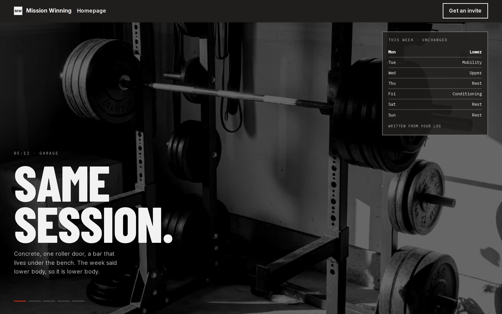
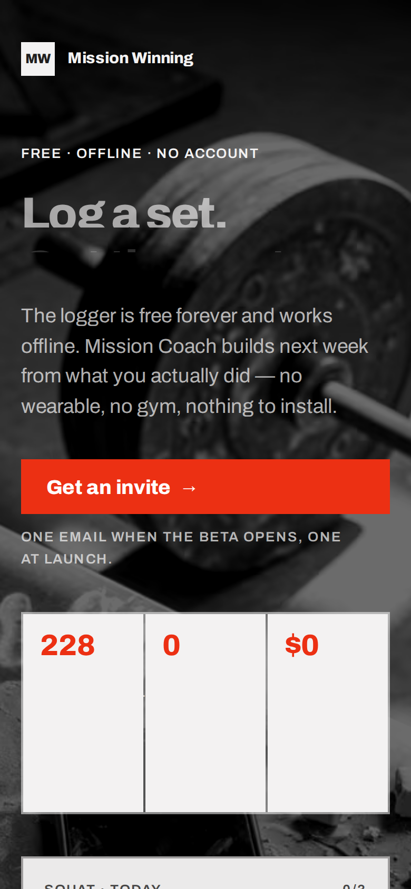
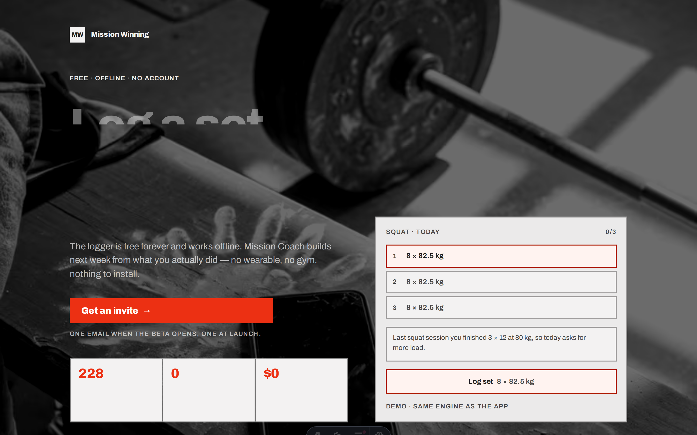

04 is a continuous-scroll landing for a first-time visitor: pinned arrival, then the live week, then the manual, then the invite. Live www stays as shipped — homepage is the A1 nine-section poster, /start is the nav-less invite capture. This sheet is the review, not the port.
npm run design:concepts — this origin, port 4177.npm run www — control at http://localhost:4321. Frames below stay empty if it is not running; that is skip, not a fake capture.npm run design:stills — fold PNGs at 390 and 1440 into docs/design/.
| Current /start | Proposed 04 | |
|---|---|---|
| Job | Invite capture. One fold, one action, terminates. | First-visit landing. Atmosphere → instrument → reference → invite. |
| Nav | None. Wordmark home only. Auth/checkout pattern (Wave 11 §11.4). | Wordmark home + two distinct CTAs, invite repeated. Nutrition-style, not auth-style. |
| Length | Single fold. | Long scroll. Three verbs in sequence. |
| Type | Archivo. The live www voice. | Barlow Condensed / IBM Plex Mono / Inter. Sign-off here is structure, grounds, copy, cadence — not the shipped face. |
| JS-off | Complete. Demo is a build-time fallback. | Pin stops swapping; logger stops taking taps. Engine target, chapters, manual, every sentence remain. |
The decision this sheet does not make. Approving 04 as /start would reverse the Wave 11 call that invite capture is nav-less. Approving it as a new path, or as /, is a different call. Production port is a later PR: Archivo, tokens, www:check.
Committed PNGs, so the review reads in a diff. Regenerated by npm run design:stills. Missing files mean the stills command has not been run on this checkout.




Same file, two compositions. Compact hides the HUD at 760px and stacks the week. Scroll each frame; the pin and the logger need script.
These frames load http://localhost:4321/start. If npm run www is not running they stay blank. That is the skip the stills script also makes.
Same two URLs as the concept build. No placeholder hash.